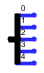

Répartiteur (Splitter)
Répartiteur (Splitter)
| Librairie: | Câblage |
| Introduction: | 2.0 bêta 1 (dans la librairie de base, déplacé dans le la librairie câblage en 2.7.0) |
| Apparence: |
|
Comportement
Le répartiteur (Splitter) crée une correspondance entre une connexion multibits et plusieurs sous-ensembles distincts de ces bits. En dépit de son nom, il peut soit diviser une connexion multibits en sous-ensembles distincts, soit combiner des sous-ensembles en une connexion multibits, voire les deux simultanément. Une description plus complète des terminaisons de bus se trouve dans la section "Répartiteur" du Guide de l'utilisateur.
Logisim traite spécialement les terminaisons lors de la propagation de valeurs dans un circuit: alors que tous les autres composants ont un retard calculé pour simuler leur comportement réel, les valeurs se propagent instantanément à travers les terminaisons de bus (ainsi que dans les fils).
Remarque: le terme Splitter, utilisé en anglais est un terme non standard, à ma connaissance, unique à Logisim. Je ne connais aucun terme standard pour un tel concept. le seul terme que j'ai entendu utiliser est ripper (découdre/défonceuse) de bus, mais ce terme est inutilement violent à mon goût.
Pin
Pour distinguer les différents points de connexion d’une terminaison, nous désignons le point de connexion d'un côté qui regroupe en un seul câble tous les fils : le bus, et nous désignons les multiples points de connexion de l’autre côté comme : les terminaisons. (voir figure ci-dessous)
| Bus |

|
Terminaisons |
- Bus:
-
la largeur en bit du bus correspond à l'attribut
Largeur de bits
et c'est la valeur dénombrant tous les conducteurs transitant par le bus. - Terminaison :
-
La largeur de bit des terminaisons est determinée par la largeur de bit du bus divisé par le nombre de terminaisons dans les cas d'une division entière. Dans les autres cas, les largeurs seront réparties de manière fractionnaire équilibrée.
Par exemple un bus de 10bits avec 4 terminaisons aura deux terminaisons de 3bits et deux terminaisons de deux bits.
Attributs
Lorsque le composant est sélectionné ou ajouté, les chiffres '0' à '9' modifient l'attribut "Terminaisons"
, Alt-0 à Alt-9 modifient à la fois les attributs "Terminaisons"
et "Largeur de bit"
et les touches fléchées modifient l'attribut Orientation
.
- Orientation
- Précide de quel côté du composant dessiné doivent se trouver les broches de terminaisons
- Terminaisons
- Nombre de terminaisons
- Largeur en bit
- Largeur en bit du bus
- Apparence
-
Prend en charge différentes manières de représenter le séparateur dans le circuit. (Voir figure ci-dessous) L'option
Gauche
(par défaut) dessine une colonne vertébrale à gauche du bus (si on le considère comme une entrée), avec une ligne étiquetée provenant du dos pour chaque terminaison. L'optionDroite
dessine la colonne vertébrale à droite du bus. L'optionCentrée
centre la colonne vertébrale de manière à ce qu'elle soit à peu près égale à gauche et à droite. Et l'optionHéritage
dessine des lignes diagonales à chaque extrémité, sans étiquettes. Cette option est principalement destinée à la compatibilité avec les versions antérieures à la version 2.7.0, qui constituaient la seule option pour l'apparence du séparateur.

 A droite A gauche Au centre Héritage - Bit x
-
Détermine l'index de la terminaison auquel correspond le bit x du bus. Les terminaisons sont indexées à partir de 0 en haut (pour un séparateur orienté est ou ouest) ou de 0 à gauche / ouest (pour un séparateur orienté nord ou sud). Un terminaison peut ne pas être connectée à un bit du bus par contre il n'y a aucun moyen pour q'un bit du bus soit connecté à plusieurs terminaisons.
Parfois, vous pouvez vous éviter de triturer chaque attribut Bit x en faisant apparaître le menu contextuel d’un Répartiteur (généralement en cliquant dessus avec le bouton droit de la souris). Le menu contextuel comprend des options intitulées
Distribuer en ordre croissant
etDistribuer en ordre décroissant
. L'option Distribuer en ordre croissant (par defaut) distribue les bits afin que chaque extrémité partagée reçoive le même nombre de bits à partir de la fin. L'option Distribuer en ordre decroissant fait de même mais commence par la fin avec le no le plus grand. Si le nombre de terminaisons ne divise pas exactement le nombre de bits du bus, les bits sont distribués sur les terminaisons de manière aussi uniforme que possible.
Comportement de l'outil pousser
Aucun.
Comportement de l'outil de texte
Aucun.